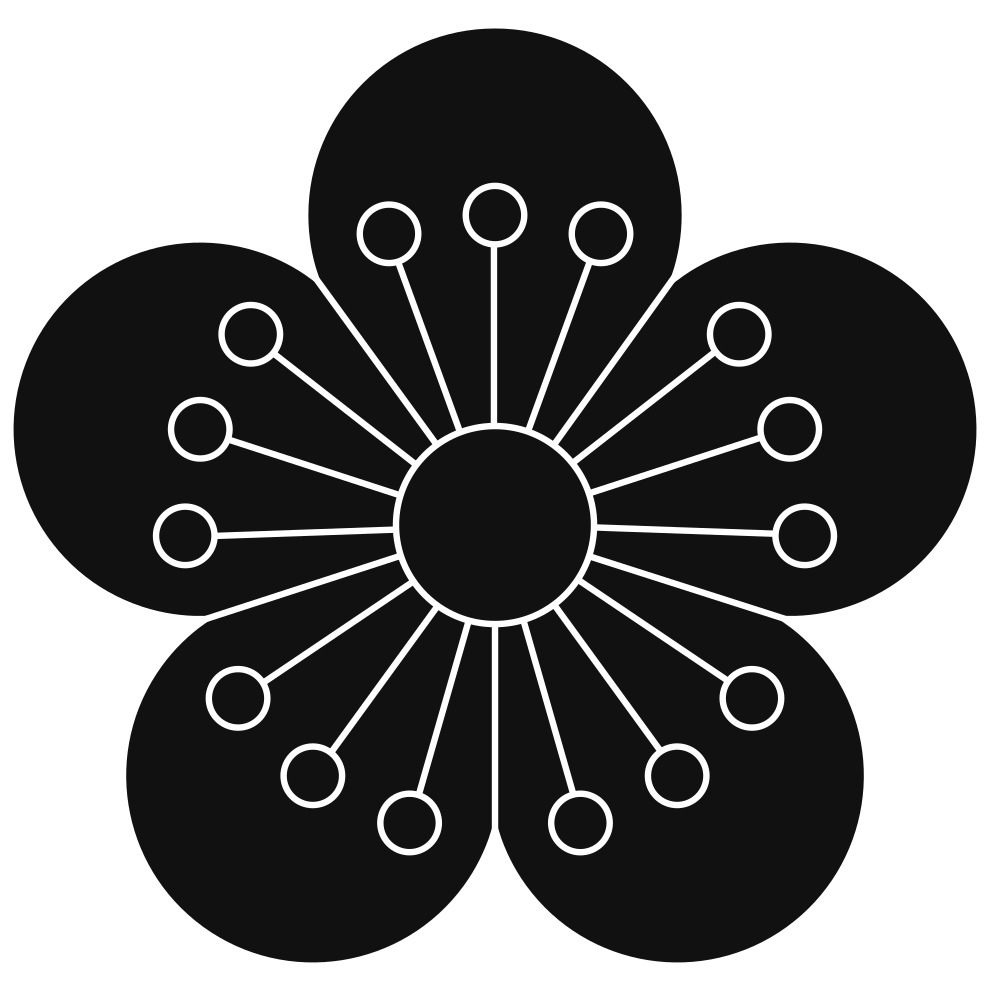

<div id="galleryModeMainWrapper">
  <div id="titleModeNBack">
    
    <h1 id="titleMode"></h1>
    <div id="titleModeGalleryGroups">
      <div data-gallery_groups="1" data-filter_groups="JP" class="active">
        
      </div>
      <div data-gallery_groups="2" data-filter_groups="ZH">
        
      </div>
      <div data-gallery_groups="3" data-filter_groups="VI">
        
      </div>
      <div data-gallery_groups="4" data-filter_groups="KR">
        
      </div>
      <div data-gallery_groups="5" data-filter_groups="Glyphs">
        
      </div>
    </div>
    <span id="galleryCounter" class="ms-auto me-1"><span data-counter_title="All">Родовых знаков</span>&ensp;<span data-counter="All">0</span>/10000</span>
    <div class="circle_button" onclick="window.redirTo({ index: true, url: ''});"><span class="button_code_name">home</span></div>
  </div>
  <div id="galleryModeContent">
    <div id="galleyContentMain">
      <div id="galleryContentHeader">
        <div id="galleryGroupTitle" data-key="JP">
          Япония
        </div>
        <div class="vr ms-3 me-3"></div>
        <div id="galleryContentSearch">
          <input id="galleryContentSearchInput" type="text" placeholder="Поиск знака…" data-key="searchMonItem">
        </div>
        <div class="vr ms-3 me-3"></div>
        <div id="galleryFiltersOpts">
          <div class="button_rounded_common" onclick="filterUnset();" data-bs-toggle="tooltip" data-bs-placement="bottom" title="По умолчанию" data-filter_entity="reset">
            <span class="icononly maticon">filter_alt</span>
          </div>
          <div class="dropdown_wrapper">
            <div class="button_rounded_common filterButton" onclick="openTargetDropdown('filter');" data-filter_entity="filter" >
              <span data-filter_selected=""></span>
              <span class="downarrow"></span>
            </div>
            <div class="dropdown_menu" data-filter_menu data-dropid="filter">
              <div value="clan_name" data-key="clan_name">Имя клана</div>
              <div data-filter_value="default" value="clan_status" data-key="clan_status">Статус клана</div>
            </div>
          </div>

          <div class="button_rounded_common" onclick="filterSwapper();" data-bs-toggle="tooltip" data-bs-placement="bottom" title="Инвертировать фильтр" data-filter_entity="swapper" data-filter_swap="false">
            <span class="icononly maticon">swap_vert</span>
          </div>
        </div>
      </div>
      <hr class="w-100 mt-4">
      <div id="galleryContentGrid">

      </div>
      <div id="galleryControlButtons">
        <div class="button_rounded_common" onclick="window.redirTo({ index: true, url: '' });">
          <span class="icononly maticon">home</span>
        </div>

      </div>
    </div>
    <div id="gallerySelectedItemBlockWrapper">
      <div id="gallerySelectedItemBlock">
        <div id="galleryInfoBanner">
          <div id="galleryInfoBannerOrnate"></div>
          <h2 id="galleryInfoSelectedTitle">Мару-ни Мицуаой</h2>
          <div class="shadowDropWrapper w_children"><h2 id="galleryFullTitle" class="chinese_corner_mask"></h2></div>
        </div>
        <div id="gallerySelectedItem">
          
          <div class="shadowDropWrapper topright_12px w_children">
            <div 
              id="gallerySelectedTranslatedName"
              class="vertical_kanji  chinese_corner_mask"
              data-transcript="
              <ruby class='ruby_bottom'>
                <ruby>丸<rt>Maru</rt>に<rt>Ni</rt>三つ<rt>Mittsu</rt>葵<rt>Aoi</rt></ruby><rt>Три листа мальвы в кругу</rt>
              </ruby>">丸に三つ葵
            </div>
          </div>
          <div class="shadowDropWrapper topleft_12px w_children">
            <div
              id="gallerySelectedTranslatedName"
              class="vertical_kanji chinese_corner_mask"
              data-transcript="
              <ruby class='ruby_bottom'>
                <ruby>松平<rt>Matsudaira</rt>家<rt>Ke</rt>の<rt>No</rt>家紋<rt>Kamon</rt>、<rt></rt>侍<rt>Samurai</rt>
                </ruby><rt>Фамильный герб рода Мацудайра, самураев</rt>
              </ruby>">松平家の家紋、侍
            </div>
          </div>

          <div class="bottom_6px left_3px">
            <div id="gallerySelectedImageProps" class="shadowDropWrapper">
              <span data-imgprop="SVG" class="chinese_corner_mask">SVG</span>
            </div>
          </div>
        </div>
        <div id="gallerySelectedSubTitle">
          <div class="gallerySelectedBreakDecorator">
            
          </div>
          <b id="gallerySelectedSubTitleText">Мацудайра</b>
          <div class="gallerySelectedBreakDecorator rotate-180">
            
          </div>
        </div>

        <div>Какой-то текст</div>
        <div id="gallerySelectedCorners"></div>
      </div>
    </div>
  </div>
</div>
